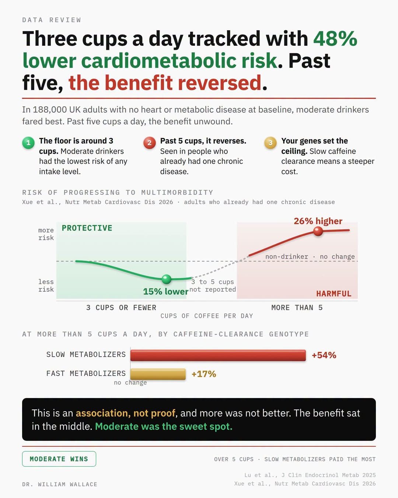
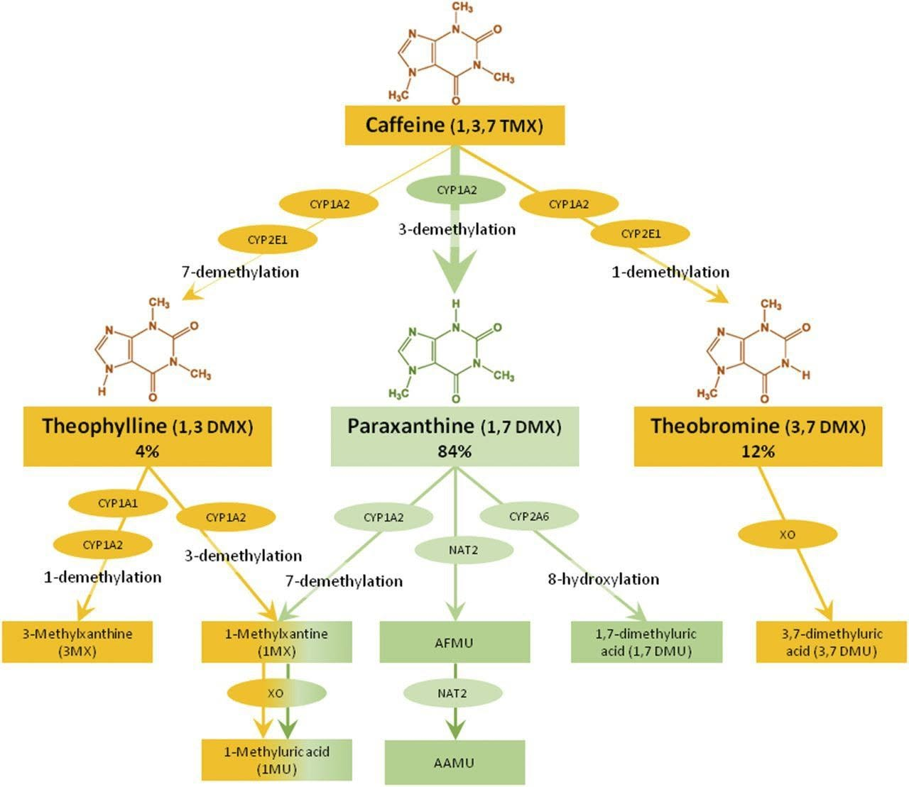

Adding cocoa to coffee may smooth caffeine's jitters
A shared piece suggests cocoa's theobromine may balance caffeine's effects and support focus. Not specific to heart health.
20 posts
A shared piece suggests cocoa's theobromine may balance caffeine's effects and support focus. Not specific to heart health.

Louis shares a chart based on the Harvard Nurses' Health Study and Health Professionals Follow-up Study relating coffee, tea and caffeine to dementia, with links to previous posts. The chart image is not described in the text.
Summarizes a video on whether coronary calcium can be reversed. Tom's score fell from 66 to 42 (36%) between 2018 and 2021 amid many simultaneous changes (keto diet, fasting, supplements, less exercise, weight gain), and he admits he does not know which mattered.

Louis shares the JAMA prospective cohort study of over 130,000 US adults followed up to 43 years: higher caffeinated coffee and tea intake was associated with lower dementia risk and modestly better cognition, strongest at moderate intake.
A Queen Mary University of London study in Microbial Cell found that caffeine acts via AMPK, the cellular fuel gauge, influencing growth, DNA repair and stress response. It was done in fission yeast, so human relevance is unproven.

A review of coffee and human aging reports that regular moderate coffee consumption is associated with lower all-cause mortality and fewer cardiovascular, stroke and cancer cases. Coffee and its components (caffeine, chlorogenic acids) appear to support stress adaptation and aging mechanisms.

Louis discusses a UK cohort of 188,000 adults where moderate coffee drinkers (about three cups) had roughly 48% lower risk of developing two or more of type 2 diabetes, coronary disease and stroke. He cautions that most coffee research is observational, so the exact optimum is uncertain.
ABC reports on a new AHA statement that up to five cups daily is safe for most adults and regular consumption may link to lower risks of stroke, diabetes and heart failure.

An infographic explaining that caffeine is absorbed quickly, peaks in blood within 30-60 minutes, and is broken down by liver enzyme CYP1A2, which varies between people and explains different responses to coffee.

Shared summary of a JAMA cohort of 131,821 US nurses and health professionals followed up to 43 years. The highest caffeinated coffee group had 18% lower dementia risk after adjustment, decaf showed no link, and the lowest risk was at about 2-3 cups of coffee or 1-2 cups of tea. Observational, with large confounding (heavy drinkers smoked more).

A shared summary says AHA now finds up to 400 mg caffeine daily safe for most adults, with moderate intake linked to lower risk of heart disease, stroke, heart failure and AFib. The DECAF trial found fewer AFib recurrences in coffee drinkers. Benefit peaks around 3-4 cups.
Shared JAMA summary of the Harvard Nurses' Health Study and Health Professionals Follow-up Study. Moderate intake of caffeinated coffee or tea was associated with lower dementia risk and modestly better cognition, while decaf showed no benefit.
Shared summary of the JAMA cohort study following health professionals for an average of 37 years. Moderate caffeinated coffee or tea intake was linked to lower dementia risk and better cognitive performance, with no relationship for decaf.
Louis quotes the AHA statement that up to 400 mg caffeine daily (about five 8-oz coffees) is generally safe for most adults and linked to lower risk of heart failure, heart disease and stroke in some, while higher amounts as in energy shots may raise blood pressure or arrhythmia risk.
Louis notes the coffee research is mostly observational but huge, and shares a video quote that 1-3 cups a day is associated with about 30% lower all-cause mortality.
Shared from Harvard Chan: an American Heart Association statement in Circulation says most adults can safely consume up to 400 mg caffeine daily (up to five 8-oz cups of coffee), possibly with cardiovascular benefits. Frank Hu co-authored it as vice chair.
A shared summary says that in one large study unsweetened caffeinated coffee was linked to a 37% lower risk of Parkinson's disease and a 34% lower risk of Alzheimer's and related dementias. Caffeine blocks adenosine A2A receptors that regulate dopamine signaling in movement circuits. The evidence described is observational, with some animal mechanistic work.

Louis shares a SuppVersity summary of a Journal of Functional Foods review. A meta-analysis found 5 cups a day versus none was associated with a 29% lower type 2 diabetes risk, with each extra cup about 6% lower, and decaf showed a similar benefit to caffeinated coffee. Data beyond 6 cups are murky.
Quoted podcast excerpt: lifelong coffee drinking is associated with slower cognitive decline and lower risk of Parkinson's, Alzheimer's and vascular dementia, possibly because caffeine blocks adenosine receptors and makes the brain work harder.
A shared summary of the AHA scientific statement says coffee links to lower risk of type 2 diabetes, coronary disease, heart failure, stroke and AFib, with greatest benefit at 2-4 cups and up to 5. Tea was also associated with better outcomes; energy drinks and caffeine supplements differ.